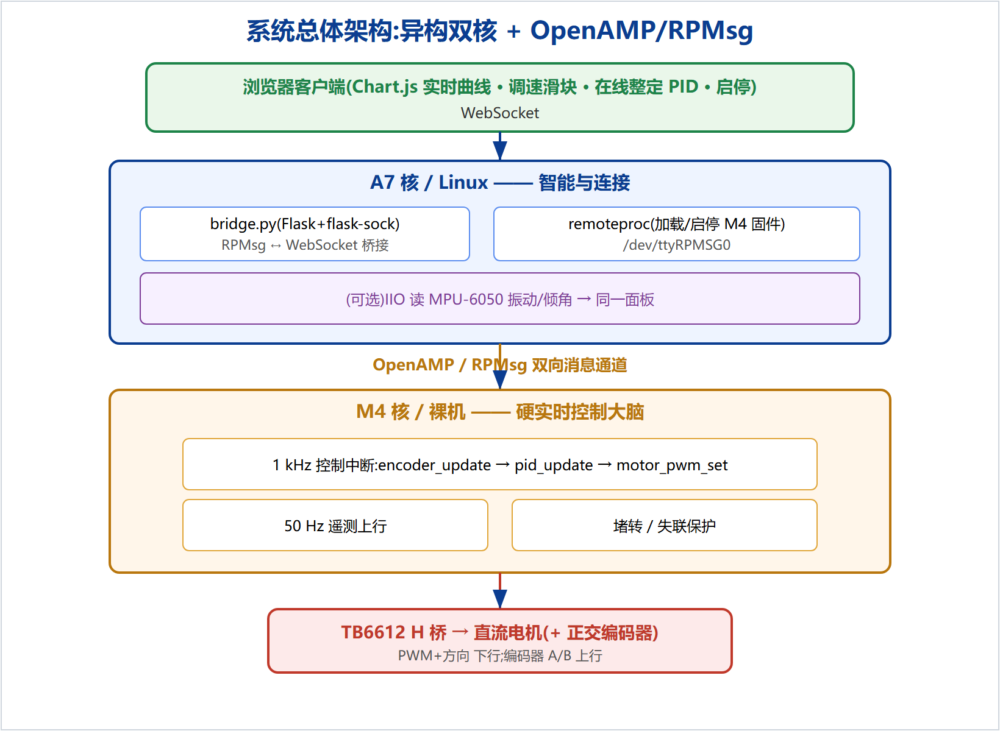
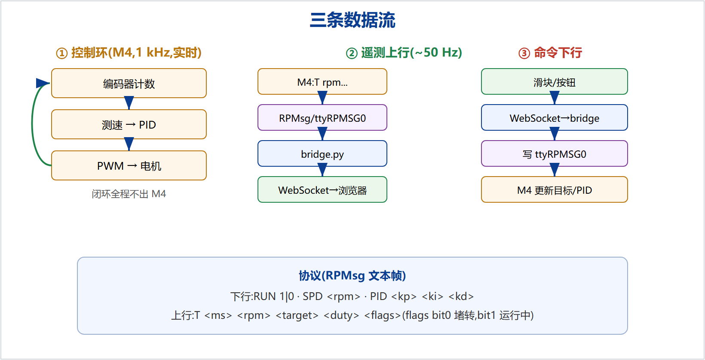
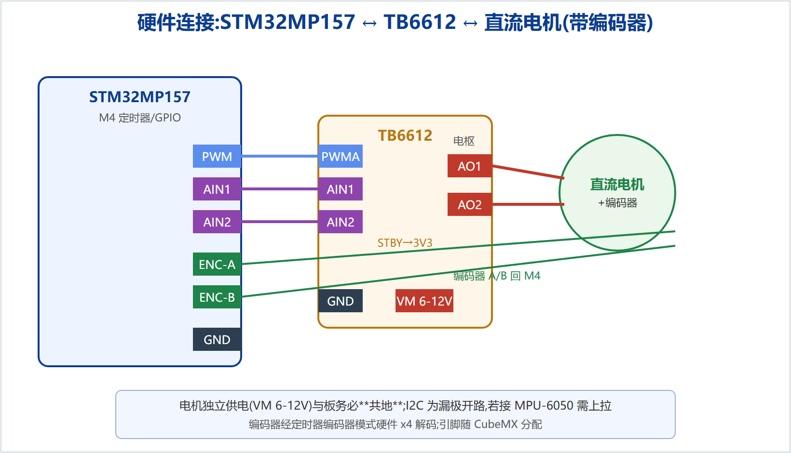
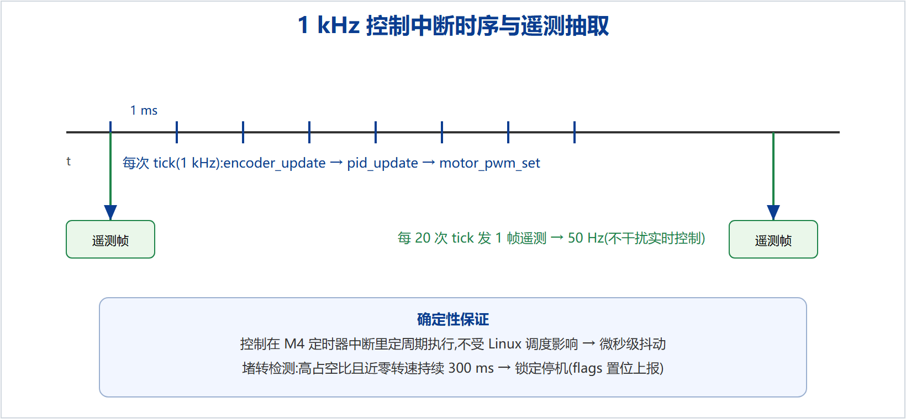
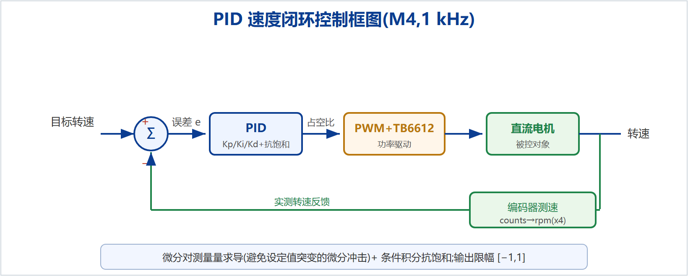
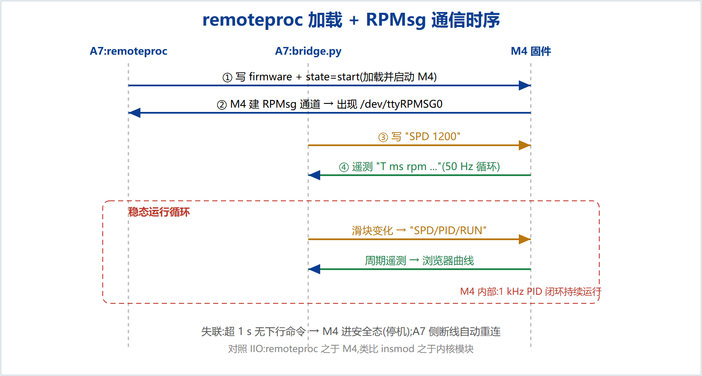

在工业运动控制、机器人与自动化设备中,系统往往同时要求两种看似矛盾的能力:一是对执行机构的**硬实时确定性控制**,二是**联网、可视化与智能处理**的丰富功能。通用应用处理器上运行的 Linux 具备后者,却因抢占式调度无法保证前者。STM32MP157 同时集成运行 Linux 的 Cortex-A7 与可跑裸机实时任务的 Cortex-M4,为解决这一矛盾提供了硬件基础。
本项目基于 STM32MP157 设计并实现了一套**异构多核直流电机实时控制与远程监控系统**:M4 核在 1 kHz 定时器中断内执行"编码器测速 → PID 速度闭环 → PWM 驱动"的硬实时控制;A7 核运行 Linux,通过 Python 桥接程序将控制数据经 WebSocket 推送至浏览器仪表盘,并接收用户的调速与在线整定指令;两核之间通过 **OpenAMP/RPMsg** 通信,由 **remoteproc** 从 Linux 用户空间加载与启停 M4 固件。系统实现了目标转速跟随、在线 PID 整定、堵转与通信失联保护等功能,并配套主机单元测试与上板验证方案。
本文从异构多核与 PID 控制理论出发,阐述系统总体设计、硬件连接与软件详细实现,重点分析了双核任务划分、OpenAMP 通信、实时性保证与工程健壮性等关键难点。该项目验证了在通用 SoC 上以"Linux + 实时协处理器"架构交付兼具确定性与智能性系统的可行性,可作为嵌入式 BSP / 系统方向的工程实践参考。
Industrial motion control and robotics often demand two seemingly conflicting capabilities: hard real-time deterministic control of actuators, and rich connectivity, visualization and intelligent processing. Linux on an application processor provides the latter but cannot guarantee the former due to preemptive scheduling. The STM32MP157 integrates a Cortex-A7 running Linux and a Cortex-M4 running bare-metal real-time tasks, providing the hardware basis to resolve this conflict.
This project designs and implements a heterogeneous dual-core DC-motor real-time control and remote monitoring system on the STM32MP157. The M4 core runs a 1 kHz control loop (encoder speed measurement -> PID -> PWM); the A7 core runs Linux, bridging control data to a browser dashboard over WebSocket and receiving setpoint and online-tuning commands; the two cores communicate via OpenAMP/RPMsg, with remoteproc loading the M4 firmware from user space. The system supports setpoint tracking, online PID tuning, stall and communication-loss protection, host unit tests and an on-board verification plan.
随着工业 4.0 与机器人技术的发展,边缘侧设备越来越需要在同一硬件上同时满足"实时控制"与"智能联网"两类需求。传统方案要么用 MCU 保证实时但缺乏联网与图形能力,要么用应用处理器跑 Linux 获得丰富功能但牺牲硬实时。异构多核 SoC(如 STM32MP157 的 A7+M4)将两者合于一芯,是当前嵌入式领域的重要趋势,也是各大 SoC 厂商(如 ST、TI、NXP、高通)平台的共性能力。掌握异构多核的任务划分与核间通信,对嵌入式 BSP / 系统工程师具有重要意义。
Linux 基金会主导的 **OpenAMP** 项目已成为异构多核核间通信的事实标准,配合内核的 **remoteproc**(远端处理器生命周期管理)与 **RPMsg**(基于 virtio 的消息通道)构成完整框架。ST 的 OpenSTLinux 发行版原生支持该框架并提供 M4 侧示例。电机控制方面,PID 因结构简单、鲁棒性好,仍是工业速度/位置闭环的主流;更高端的无刷电机采用 FOC 矢量控制。
本项目完成:(1)基于 remoteproc/RPMsg 打通 A7↔M4 双向通信;(2)在 M4 实现 1 kHz 硬实时 PID 直流电机速度闭环;(3)在 A7 实现 Python 桥接与 Web 实时控制台(调速、在线整定 PID、曲线显示);(4)实现堵转与通信失联保护;(5)配套主机单元测试与上板验证方案;(6)可选集成 MPU-6050(复用作者的 IIO 驱动)显示振动。
第 2 章介绍相关理论与技术;第 3 章系统总体设计;第 4 章硬件设计;第 5 章软件详细实现;第 6 章关键难点;第 7 章测试验证;第 8 章总结与展望。
STM32MP157 集成双核 Cortex-A7(最高约 800 MHz,运行 Linux)与 Cortex-M4(约 209 MHz,运行裸机或 RTOS)。两核共享片上资源并通过共享内存与硬件信号量协作。这种"应用核 + 实时协处理器"的结构,让系统既能享受 Linux 生态,又能把确定性任务卸载到 M4。
remoteproc 是 Linux 内核管理"远端处理器"(此处即 M4)生命周期的框架:从用户空间写 firmware 与 state 即可加载、启动、停止 M4 固件。RPMsg 是建立在 virtio 之上的消息通道,在 A7 侧可表现为字符设备 /dev/ttyRPMSG0。OpenAMP 是跨厂商的开源中间件,统一了 M4 侧使用这套机制的 API。三者共同构成异构多核的标准通信栈。
PID 控制器输出 u(t) = Kp·e + Ki·∫e dt + Kd·de/dt,其中 e 为设定值与测量值之差。比例项提供即时响应,积分项消除稳态误差,微分项抑制超调。工程实现需处理两个实际问题:**微分冲击**(设定值突变导致微分项尖峰,本项目采用"对测量量求导"规避)与**积分饱和**(输出受限时积分持续累积,本项目采用条件积分抗饱和)。
有刷直流电机的转速近似正比于电枢电压,通过 PWM 调节等效电压即可调速;H 桥(TB6612)通过两路方向信号实现正反转。正交编码器输出相位差 90° 的 A/B 两相,定时器编码器模式可硬件 4 倍频计数;每个控制周期的计数增量除以每转计数、再换算即得转速(rpm)。
标准 Linux 为吞吐与公平性优化,采用抢占式调度,普通线程的调度延迟可达毫秒级且不确定。对要求微秒级确定性的电机闭环而言,这种抖动会导致控制品质下降甚至失稳。这正是本项目把控制环放在 M4、而非 A7 用户态线程的根本原因。
功能需求:目标转速跟随、在线 PID 整定、实时曲线显示、启停、堵转与失联保护、(可选)振动监测。非功能需求:控制环硬实时(1 kHz 确定性)、客户端友好(浏览器免安装)、双核解耦可扩展、工程健壮可恢复。
系统采用"A7 智能层 + M4 实时层 + OpenAMP 桥"的异构架构,如图 3-1 所示。M4 承担确定性控制,A7 承担联网、可视化与(可选)边缘感知,remoteproc/RPMsg 连接两核。

| 层 | 模块 | 职责 |
|---|---|---|
| M4 | encoder / pid / motor_pwm / rpmsg_comm / app_control | 测速、控制律、驱动、协议、1 kHz 调度与保护 |
| A7 | bridge.py | RPMsg↔WebSocket 桥接 + 静态服务 |
| 客户端 | web/(index/app.js/style) | 曲线、滑块、在线整定、启停 |
| 脚本 | load_m4.sh / check_env.sh | remoteproc 加载、环境自检 |
系统有三条数据流,如图 3-2 所示:M4 内部 1 kHz 控制环、50 Hz 遥测上行、命令下行。控制环闭合在 M4 内部,与 A7 的通信仅用于监控与配置,从而在联网的同时不影响实时性。

主控为 100ASK STM32MP157 PRO;M4 使用其定时器(PWM、编码器、控制节拍)与 GPIO。电机驱动采用 TB6612 H 桥模块。
硬件连接如图 4-1 所示:M4 的 PWM 输出与两路方向 GPIO 接 TB6612 的 PWMA/AIN1/AIN2,TB6612 输出驱动电机电枢;编码器 A/B 两相接 M4 编码器定时器;电机独立供电并与板共地。

选用带正交编码器的直流减速电机;编码器每转计数 = 编码器线数 × 4(x4 解码) × 减速比,记为 ENCODER_CPR,用于把计数增量换算为转速。TB6612 相比 L298N 压降更小、效率更高、体积更小,适合小功率电机。
M4 用一个定时器产生 1 kHz 中断作为控制节拍。中断服务里依次执行测速、PID、PWM 输出,并按 20:1 抽取产生 50 Hz 遥测,时序如图 5-1 所示。控制在中断上下文定周期执行,不受主循环与外部影响,保证微秒级抖动。

PID 速度闭环框图如图 5-2 所示。实现要点:微分对测量量求导以避免设定值突变的微分冲击;采用条件积分抗饱和(仅当输出未饱和、或误差方向有助于退出饱和时才累积积分);输出限幅至 [−1, +1] 对应满占空比正反向。增益可由 Web 在线整定并写回默认值。

float pid_update(pid_t *p, float setpoint, float measurement) {
float error = setpoint - measurement;
float out = p->kp * error;
float dmeas = (measurement - p->prev_meas) / p->dt;
out -= p->kd * dmeas; /* 微分对测量量求导 */
p->prev_meas = measurement;
float integ_next = p->integ + p->ki * error * p->dt;
float out_i = out + integ_next;
if (out_i > p->out_max) { if (error < 0) p->integ = integ_next; out_i = p->out_max; }
else if (out_i < p->out_min) { if (error > 0) p->integ = integ_next; out_i = p->out_min; }
else p->integ = integ_next; /* 条件积分抗饱和 */
return out_i;
}
每个控制周期读取编码器定时器计数,计算与上周期的有符号增量(处理 16 位回绕),再按 rpm = 增量/CPR × (60/dt) 换算。该逻辑不依赖 HAL,可在主机上单元测试。
把 PID 输出的有符号占空比 [−1,1] 映射为 TB6612 的方向(符号决定 AIN1/AIN2)与 PWM 比较值(幅值)。
核间采用极简文本协议,便于调试(可直接 cat /dev/ttyRPMSG0):下行 RUN/SPD/PID,上行 T ms rpm target duty flags。解析与格式化为纯函数,可主机测试;传输由 OpenAMP 承载。
A7 侧 bridge.py(Flask + flask-sock)后台线程持续读 /dev/ttyRPMSG0 并广播遥测,浏览器命令经 WebSocket 写回通道;通道断开自动重连。Web 前端用 Chart.js 绘制目标 vs 实测双曲线,提供调速滑块、PID 滑块与启停。
系统启动与运行的核间时序如图 5-3 所示:先由 remoteproc 加载启动 M4 固件并出现 RPMsg 字符设备,随后进入"命令下行 + 遥测上行"的稳态循环。

| 难点 | 问题 | 解决方案 |
|---|---|---|
| 双核任务划分 | 哪些放 M4、哪些放 A7 | 确定性控制环放 M4;联网/可视化/配置放 A7;二者仅经 RPMsg 交换数据,控制环闭合在 M4 内 |
| 核间通信 | A7↔M4 可靠双向传输 | remoteproc 加载固件 + RPMsg 文本通道(/dev/ttyRPMSG0);先做 echo 验证再叠加协议 |
| 实时性保证 | 控制不能受 Linux 调度抖动影响 | 控制在 M4 1 kHz 定时器中断内定周期执行;A7 仅做监控,不参与闭环 |
| PID 工程化 | 微分冲击、积分饱和 | 微分对测量量求导;条件积分抗饱和;输出限幅 |
| 转速标定 | 计数→rpm 需与实际一致 | 标定 ENCODER_CPR(线数×4×减速比);与实测比对校准 |
| 工程健壮性 | 堵转、通信失联、断线 | 堵转检测停机;命令看门狗 1 s 无命令进安全态;A7/WebSocket 断线自动重连;启动顺序脚本 |
分三层:主机单元测试(纯逻辑)、双核通道验证(M0)、系统级里程碑验证(M1–M4)。
PID(收敛与限幅)、编码器(换算与回绕)、协议(解析/格式化往返)均以 gcc 编译 + 断言在 PC 上验证,一条 tests/run_tests.sh 全绿。此为不依赖硬件即可复现的正确性证据。
| 里程碑 | 内容 | 验收 |
|---|---|---|
| M0 | remoteproc + RPMsg echo | /dev/ttyRPMSG0 出现,写入回显 |
| M1 | 开环 PWM + Web 调占空比 | 滑块→电机转速变化 |
| M2 | 编码器 + PID 闭环 + 在线整定 | 目标 1000 rpm 收敛;调 PID 曲线可见变化 |
| M3 | 堵转/失联/重连/启动顺序 | 堵转停机;失联 1 s 停机;断线自动恢复 |
| M4(可选) | MPU-6050 振动集成 | 面板显示振动幅度 |
目标 vs 实测阶跃曲线截图、示波器抓 PWM 波形、/proc/interrupts 中断计数、演示录屏,归档于 docs/evidence/。
本项目在 STM32MP157 上实现了一套异构多核直流电机实时控制与远程监控系统,以 M4 保证硬实时、A7 提供智能与连接、OpenAMP/RPMsg 连接两核,并做到客户端友好与工程健壮。项目验证了"Linux + 实时协处理器"架构在通用 SoC 上交付兼具确定性与智能性系统的方法与可行性。
后续可扩展:将有刷电机升级为无刷电机并实现 FOC 矢量控制(电流环、Clarke/Park、SVPWM);在 M4 上引入 FreeRTOS 管理多任务;增加位置/轨迹控制;把遥测上云并接入移动端;以及与作者的 IIO 驱动深度融合,构成"实时控制 + 边缘感知"的完整边缘智能系统。
[1] STMicroelectronics. STM32MP157 Reference Manual (RM0436).
[2] The OpenAMP Project. OpenAMP Framework Documentation. openampproject.org.
[3] Linux Kernel Documentation. Remoteproc and RPMsg frameworks. kernel.org/doc.
[4] STMicroelectronics Wiki. Coprocessor management overview (OpenSTLinux). wiki.st.com.
[5] K. J. Åström, T. Hägglund. PID Controllers: Theory, Design, and Tuning. ISA, 1995.
[6] TB6612FNG Datasheet, Toshiba.
本文所述项目为学习与作品集用途。源码仓库:github.com/fyy0619-cell/mp157-dualcore-motor